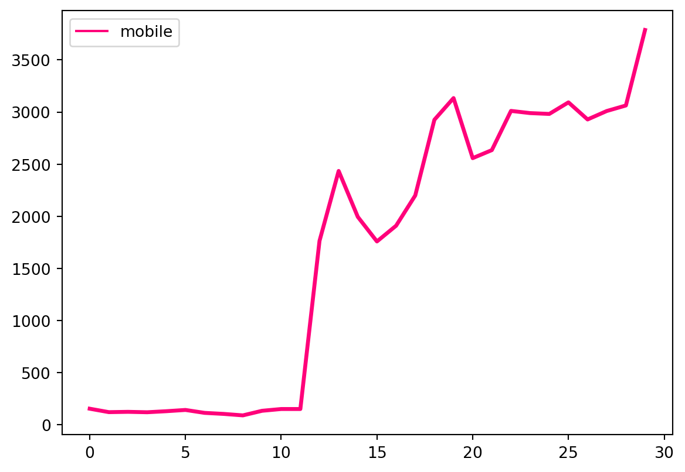

sns.lineplot(data=dau, palette="tab10", linewidth=2.5)<AxesSubplot:>
Daily active users are still mostly web users.
sns.lineplot(data=dau, palette="tab10", linewidth=2.5)<AxesSubplot:>
However, the mobile platform is seeing exponential growth.
sns.lineplot(data=dau[['day', 'mobile']], palette="tab10", linewidth=2.5)<AxesSubplot:>
The mobile platform is notably more “sticky” though this metric could be skewed due to most of the DAUs being seen in the second half of the month. This is a metric to keep an eye on in the coming months.
sns.lineplot(data=stickiness, palette="tab10", linewidth=2.5)<AxesSubplot:>A single month of data may not be a large enough time period to calculate traditional retention metrics such as retention rate and churn; however, we can look to the repeat purchase ratio to get a sense of how often users are interacting with each platform.
Interestingly, even with mobile activity occurring primarily in the second half of the month, the repeat purchase ratio is already higher on the mobile platform than it is on the web platform.
rpt_txn.head()| month | mobile | web | total | |
|---|---|---|---|---|
| 0 | 2023-04 | 0.5857 | 0.5329 | 0.5341 |
When looking at the user funnel in relative terms, we can observe that the ultimate percentage of users who execute a swap on mobile is on par with users on the web product.
On the other hand, there is an observable deviation in the number of mobile users who receive a swap quote after loading the app when compared to web users.
wuf = user_funnel.loc[user_funnel.source == 'Web']
muf = user_funnel.loc[user_funnel.source == 'Mobile']
# Define Uniswap's branding colors
uniswap_black = "#1D1D1D"
uniswap_pink = "#FF007A"
# Data preparation
data = pd.DataFrame({
'stage': ["Application Loaded", "Swap Quote Received", "Swap Executed"],
'web': [
wuf['application_loaded'][1] / wuf['application_loaded'][1],
wuf['swap_quote_received'][1] / wuf['application_loaded'][1],
wuf['swap_executed'][1] / wuf['application_loaded'][1]
],
'mobile': [
muf['application_loaded'][0] / muf['application_loaded'][0],
muf['swap_quote_received'][0] / muf['application_loaded'][0],
muf['swap_executed'][0] / muf['application_loaded'][0]
]
})
# Melt the data to make it suitable for plotting
melted_data = data.melt(id_vars='stage', var_name='source', value_name='percentage')
# Plotting with Uniswap branding colors
sns.set(style="whitegrid") # Set the style
sns.barplot(x='percentage', y='stage', hue='source', data=melted_data,
palette=[uniswap_black, uniswap_pink])<AxesSubplot:xlabel='percentage', ylabel='stage'># Set the Uniswap branding colors
uniswap_black = "#000000"
uniswap_pink = "#FF007A"
# Set the style
sns.set(style="whitegrid")
# Convert 'day' column to datetime type
market_share['day'] = pd.to_datetime(market_share['day'])
# Create the figure and axes objects
fig, ax1 = plt.subplots()
# Plot the market share for protocol and web on the primary y-axis
sns.lineplot(x="day", y="protocol", data=market_share, ax=ax1, label="Protocol", color=uniswap_black)
sns.lineplot(x="day", y="web", data=market_share, ax=ax1, label="Web", color=uniswap_black)
# Set the labels and title for the primary y-axis
ax1.set_xlabel("Day", fontsize=12, fontweight='bold', color=uniswap_black)
ax1.set_ylabel("Market Share (Protocol and Web)", fontsize=12, fontweight='bold', color=uniswap_black)
ax1.set_title("Market Share Over Time", fontsize=14, fontweight='bold', color=uniswap_black)
# Create a secondary y-axis for the mobile data
ax2 = ax1.twinx()
# Plot the market share for mobile on the secondary y-axis
sns.lineplot(x="day", y="mobile", data=market_share, ax=ax2, label="Mobile", color=uniswap_pink)
# Set the label for the secondary y-axis
ax2.set_ylabel("Market Share (Mobile)", fontsize=12, fontweight='bold', color=uniswap_pink)
# Format x-axis ticks
ax1.xaxis.set_major_locator(mdates.MonthLocator()) # Set major tick as month
ax1.xaxis.set_major_formatter(mdates.DateFormatter("%Y-%m")) # Format as year-month
# Rotate x-axis tick labels for better readability
plt.xticks(rotation=45)
# Add legends
ax1.legend(loc="upper left", frameon=False, fontsize=10)
ax2.legend(loc="upper right", frameon=False, fontsize=10)
# Set the background color of the plot
fig.patch.set_facecolor('w')
ax1.set_facecolor('w') # Set the primary y-axis background color
ax2.set_facecolor('w') # Set the secondary y-axis background color
# Set the text color
plt.rcParams['text.color'] = uniswap_black
# Adjust spacing between the subplots
fig.tight_layout()
# Display the plot
plt.show()Mobile users have lower average transaction counts and average transaction values than web users.
print(avg_txn) month mobile web protocol total
0 2023-04 4.249278 5.706158 7.785469 6.854522print(avg_txn_val) month platform swap_value
0 2023-04 Protocol 6035.434185
1 2023-04 Mobile 788.424967
2 2023-04 Web 2044.921232